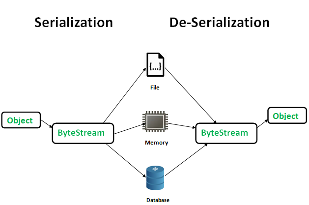

Java Deserialization
WARNING: NOT TESTED TO BE
COMPLETED WITH MORE RESOURCES
Java Deserialization (aka Deserialization of untrusted data)
OWASP:
https://www.owasp.org/index.php/Deserialization_of_untrusted_dataTo
make a Java object serializable we implement the
java.io.Serializable interface.
•
Serialization is a mechanism of converting the state of an object into a
byte stream.
The
ObjectOutputStream class contains
writeObject() method for serializing an
Object.
•
Deserialization is the reverse process where the byte
stream is used to recreate the actual Java object in memory
The
ObjectInputStream class contains
readObject() method for deserializing an object.
The byte stream created is platform independent. So,
the object serialized on one platform can be deserialized on a different platform
examplethis example simply writes the String “bob” to disk using Java’s
serializable interface, then reads it back in and prints the result.
import java.io.ObjectInputStream; //<---
import java.io.FileInputStream;
import java.io.ObjectOutputStream; //<---
import java.io.FileOutputStream;
public class SerializeTest{
public static void main(String args[]) throws Exception{
//This is the object we're going to serialize.
String name = "bob";
//We'll write the serialized data to a file "name.ser"
FileOutputStream fos = new FileOutputStream("name.ser");
ObjectOutputStream os = new ObjectOutputStream(fos);
os.writeObject(name); //<---
os.close();
//Read the serialized data back in from the file "name.ser"
FileInputStream fis = new FileInputStream("name.ser");
ObjectInputStream ois = new ObjectInputStream(fis);
//Read the object from the data stream, and convert it back to a String
String nameFromDisk = (String)ois.readObject(); //<---
//Print the result.
System.out.println(nameFromDisk);
ois.close();
}
}
VulnerabilityVulnerabilities arise when
developers write code that accepts serialized data from untrusted users and attempt to unserialize it for use in the
program. Depending on the language, this can lead to all sorts of consequences, but most interesting, and the one we
will talk about here is remote code execution.
Bibliography:
•
https://www.geeksforgeeks.org/serialization-in-java•
https://foxglovesecurity.com/2015/11/06/what-do-weblogic-websphere-jboss-jenkins-opennms-and-your-application-have-in-common-this-vulnerability/•
hands on replicate vulnerability:
https://zonksec.com/blog/hands-on-with-weblogic-serialization-vulnerability/